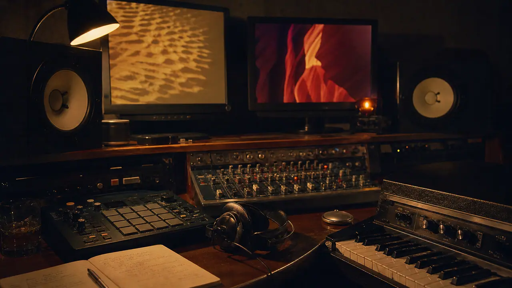
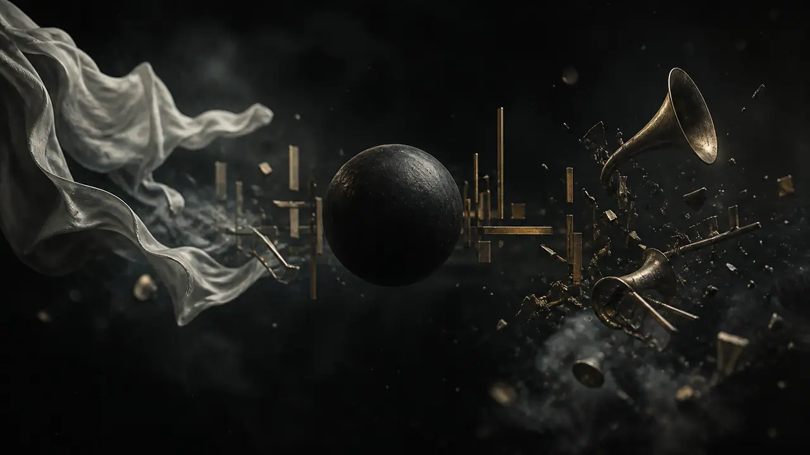
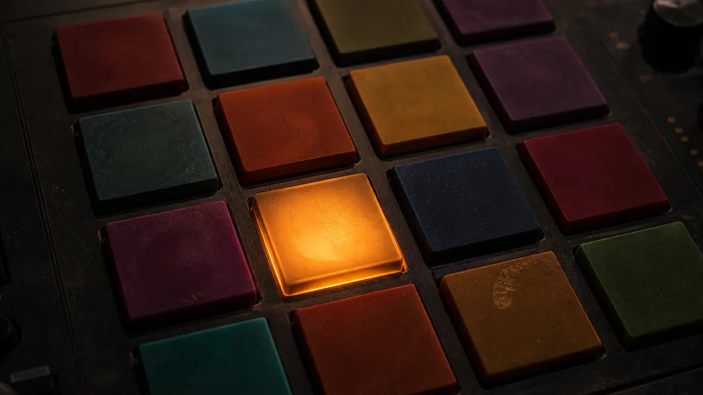
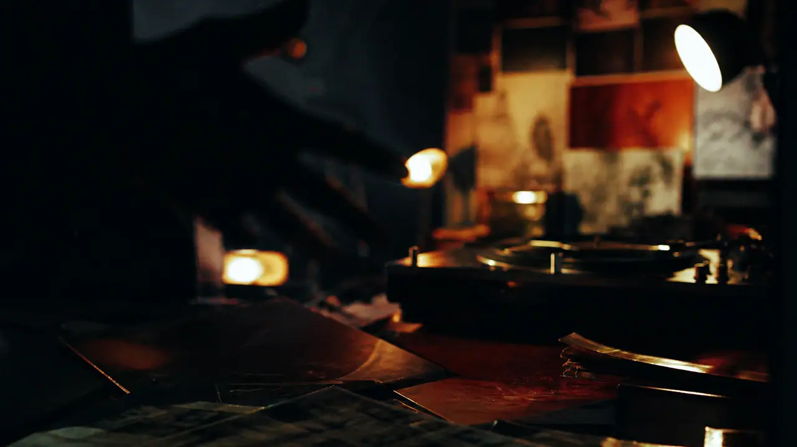
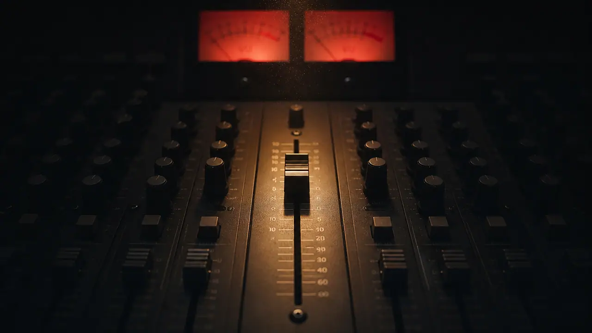

Geographic biography retired. The brief is a world-class hip-hop/R&B producer. Winner: E — THE 2-BUS. Signature mechanic: PLAY sums the mix. Projects are channel solos. Scroll is the arrangement.

A — MIX POSITION Seated at the desk. Intimate, buildable, slightly familiar as “studio website.” Originality 8.4 · Awwwards 8.6 · Signature 8.2

B — STEREO FIELD Abstract L/R/depth mix. High art, weaker producer-craft read, harder to keep from becoming a visualizer. Originality 9.1 · Producer 7.8 · Signature 8.5

C — PAD GRID 16 pads as navigation. Culturally right, gimmick risk, weak scroll. Originality 8.0 · Scroll 6.5 · Signature 8.0

D — AFTERLIGHT Photography-first music video. Beautiful, but PLAY does not have a unique job. Originality 8.2 · Music 7.6 · Signature 7.9

E — THE 2-BUS (WINNER) The site is the master bus. Unsummed until PLAY. Channels solo into atmospheres. Mix-position camera (from A) is the body, not the idea. ORIG 9.4 · ID 9.3 · PRODUCER 9.6 · MUSIC 9.7 · INTERACTION 9.4 · SCROLL 9.2 · TYPE 9.1 · ART 9.3 · NARRATIVE 9.2 · SIGNATURE 9.6 · PERF 9.2 · MOBILE 9.1 · AWWWARDS 9.4